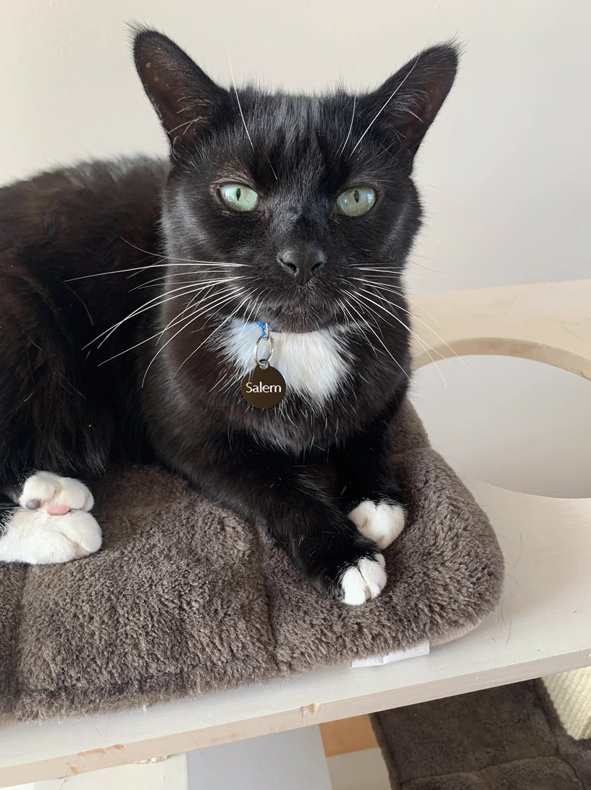
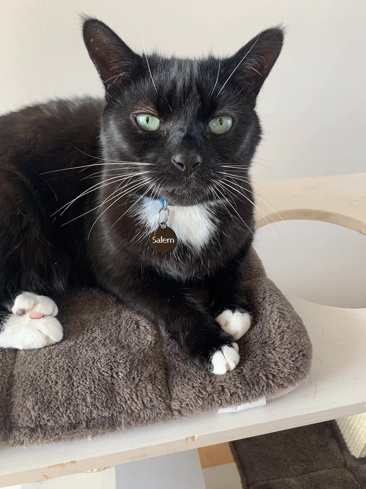

| AKA |
Flopsy |
| Age |
5 years old |
| Colour |
Black and white tuxedo |
| Breed |
Shorthair |
| Special Talents |
Can open doors and uses paw to lift food to his mouth |
| Quirk |
Likes to flop on the floor and roll |
| Favourite Food |
Dreamies |
| County of Origin |
Wicklow |
| Theme Tune |
Ocean Eyes by Billie Eilish |


 
